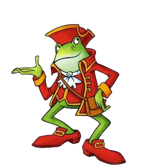
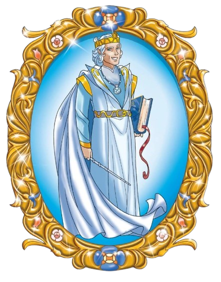

Scribble Hopper
Geronimo Stilton is a popular children's book character. He's a journalist and editor of the fictional newspaper The Rodent's Gazette.
Mel
Geronimo Stilton is a popular children's book character. He's a journalist and editor of the fictional newspaper The Rodent's Gazette.
Lady of Dreams
Geronimo Stilton is a popular children's book character. He's a journalist and editor of the fictional newspaper The Rodent's Gazette.